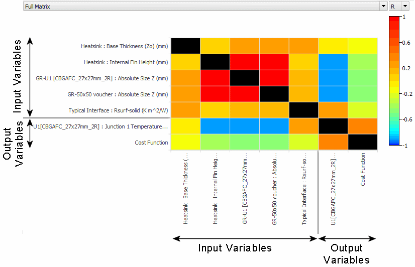
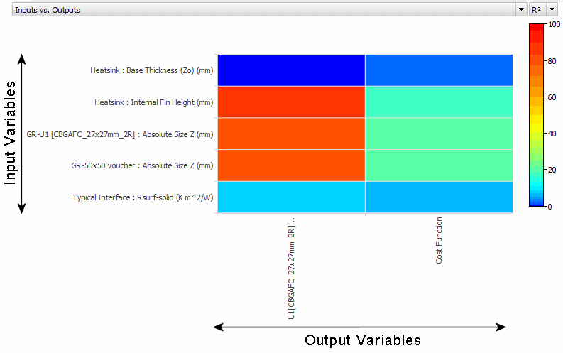
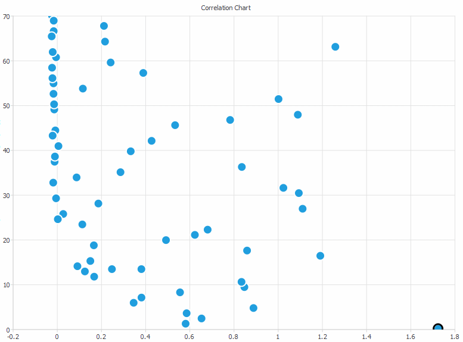
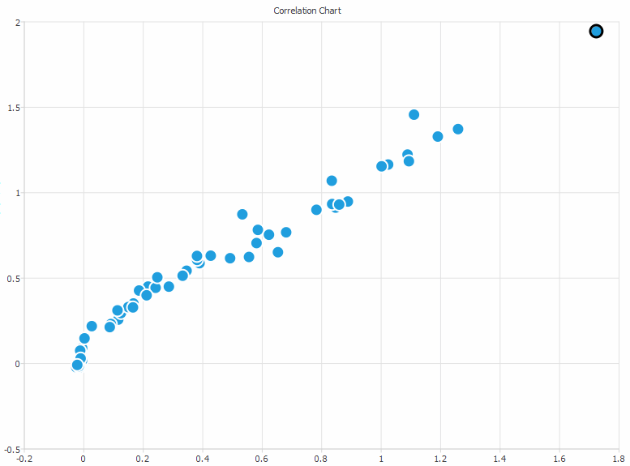

To access:
Use this matrix to visually identify design parameters
that correlate well with output variables, including the calibration
cost function. The matrix also highlights less relevant design parameters,
which you can then exclude from the analysis, thereby saving time.
Description
Figure 1. Full Correlation
Matrix Showing R Values
Figure 2. Inputs
vs Outputs Correlation Matrix Showing R2 Values
Objects
Object
|
Description
|
|---|
Matrix Selector
|
The matrix is made up
of colored cells, where each cell indicates the correlation between
two variables. A cell is colored black where the two variables are
the same as these cells can be ignored.
Full Matrix
− the x-axis and y-axis each list all input and output variables.
A line separates the input variables from output variables and the
cost function, see Figure 1.
Inputs vs.
Outputs − input variables are listed along the y-axis, output variables
along the x-axis.
Outputs vs.
Inputs − output variables are listed along the y-axis, input variables
along the x-axis.
Outputs vs.
Outputs − the x-axis and y-axis each list all output variables.
Inputs vs.
Inputs − the x-axis and y-axis each list all input variables.
|
Coefficient Selector
|
R − The correlation
coefficient, as a measure of the relationship between the input
variable and the output variable.
Values lie between −1 and +1.
Positive values indicate a relationship between the input and output
variables such that as the value of the input variable increases,
the value of the output variable also increases. A value close to
+1 indicates a strong positive linear correlation.
A value close to 0 indicates that there is a poor linear or near-random
correlation between the input and output variables.
Negative values indicate a relationship between the input and output
variables such that as the value of the input variable increases,
the value of the output variable decreases. A value close to −1
indicates a strong negative linear correlation.
R2 −
The coefficient of determination, as a percentage.
Values lie between 0 and 100.
This figure does not discern between positive
and negative correlations, but gives a clearer indication between
strong and poor correlations.
|
Usage Notes
Click on a cell to display a correlation chart of the two variables
Figure 3 shows a correlation chart
when R = −0.38, a random correlation.
Figure 3. Random
Correlation
Figure 4 shows a correlation chart
when R = 0.983, a strong positive linear correlation.
Figure 4. Strong
Positive Linear Correlation